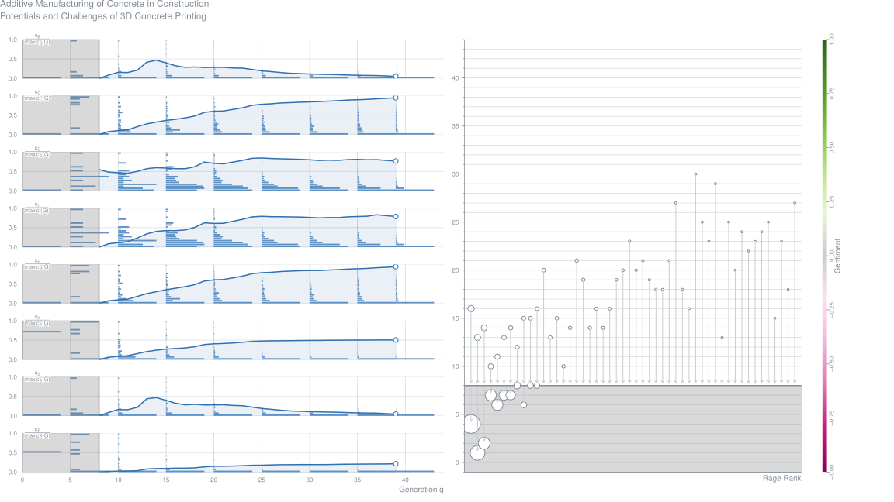
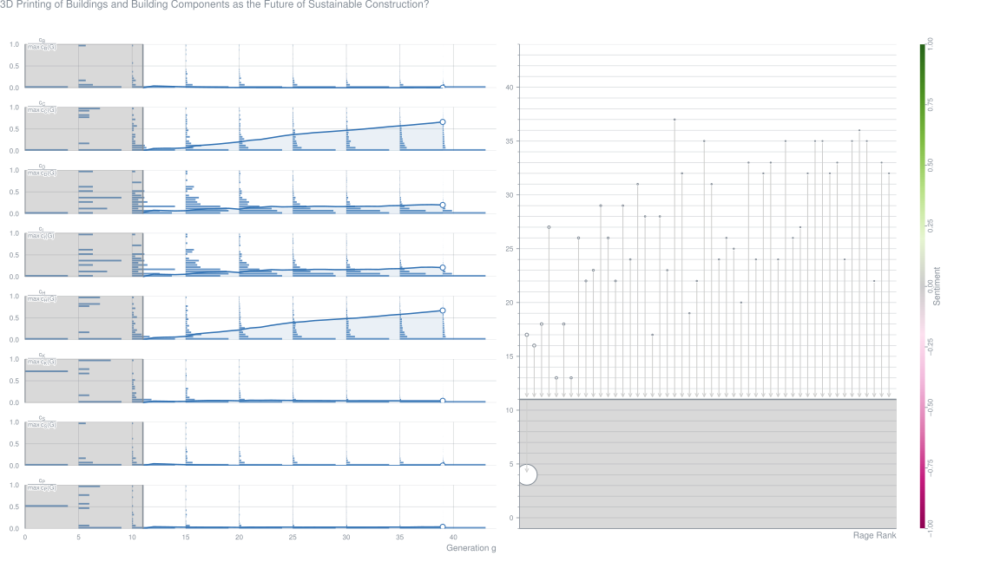
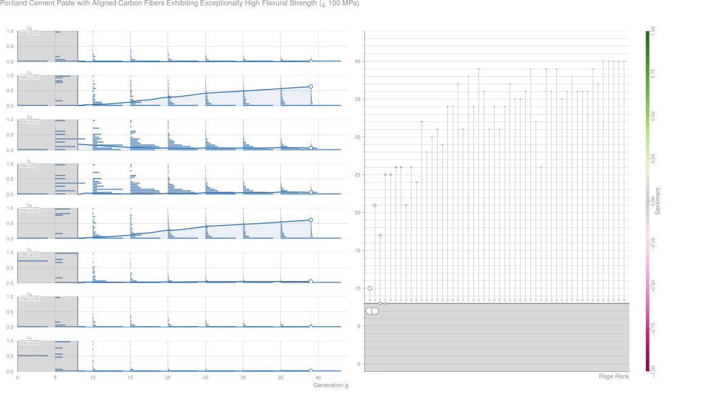
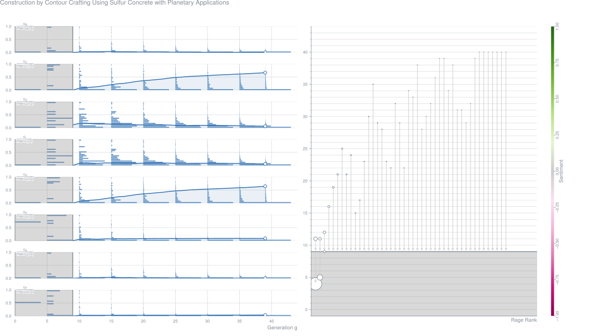

AbstractAdditive manufacturing is gaining ground in the construction industry. The potential to improve on current construction methods is significant. One of such methods being explored currently, both in academia and in construction practice, is the additive manufacturing of concrete (AMoC). Albeit a steadily growing number of researchers and private enterprises active in this field, AMoC is still in its infancy. Different variants in this family of manufacturing methods are being developed and improved continuously. Fundamental scientific understanding of the relations between design, material, process, and product is being explored. The collective body of work in that area is still very limited. After sketching the potential of AMoC for construction, this paper introduces the variants of AMoC under development around the globe and goes on to describe one of these in detail, the 3D Concrete Printing (3DCP) facility of the Eindhoven University of Technology. It is compared to other AMoC methods as well as to 3D printing in general. Subsequently, the paper will address the characteristics of 3DCP product geometry and structure, and discuss issues on parameter relations and experimental research. Finally, it will present the primary obstacles that stand between the potential of 3DCP and large-scale application in practice, and discuss the expected evolution of AMoC in general.Metrics
3D Printing of Buildings and Building Components as the Future of Sustainable Construction? (2016-08)
AbstractThe paper presents the state-of-the-art concerning the current achievements in the field of 3D printing of buildings and building components. The 3D printing technologies, comparing to traditional techniques of constructing the buildings, could be considered as environmental friendly derivative giving almost unlimited possibilities for geometric complexity realizations. Two kinds of technologies were described in this paper with pointing to Contour Crafting as a promising technique that may be able to revolutionize construction industry in near future. Numerous advantages of this technology, such as reduction of the costs and time, minimizing the pollution of environment and decrease of injuries and fatalities on construction sites could be cited. Despite many advantages and hopes, some concerns are summarized in the conclusions, as the technology still has many limitations. A brief description of few examples of pioneering usage of 3D printing in construction industry are presented (Canal House in Amsterdam, WinSun company and printing application for building carried out by Skanska company). Creating a model that will be appropriate for 3D printers is possible in many different modelling programs. One of the most popular formats for sharing such models is STL format. In the paper sample models crated in Autodesk Inventor are shown, but also other tools suitable for preparing models for 3D printing are briefly discussed.Metrics
Portland-Cement-Paste with Aligned Carbon-Fibers Exhibiting Exceptionally High Flexural Strength (>100 MPa) (2016-08)
Manuel Hambach,
Hendrik Möller,
Thomas Neumann,
Dirk Volkmer Journal Article – Cement and Concrete Research, Vol. 89, pp. 80-86
AbstractHere, we introduce a nozzle injection technique for carbon fiber-reinforced cement paste leading to unidirectional alignment ofcement-embedded short carbon fibers that follow the movement direction of the guided nozzle. In comparison to non-reinforced cement pastes, this novel material exhibits a tremendous increase of its flexural strength upon admixing and aligning 1 to 3 percent (by volume) of chopped carbon fibers. Cement pastes containing carbon fibers aligned in the stress direction thus acquire high compressive and flexural strength values at the same time. Mechanical tests prove thematerial to withstand flexural loads larger than 100MPa in conjunction with a deflection hardeningbehavior resembling that ofhigh performancefiber-reinforced cementious composites at relatively low fiber volume content. Insights into the preparation, fiber alignment, rheology and the fracture behavior of this material are presented in this studyMetrics
Construction by Contour Crafting Using Sulfur-Concrete with Planetary Applications (2016-08)
AbstractThis paper reports on the experiments with the Contour Crafting Automated Construction process using sulfur concrete as the choice of construction material. Sulfur concrete has numerous terrestrial applications and is potentially an ideal construction material for planetary construction. On Mars, sulfur can be found in abundance and the range of temperature variation on the planet is within the safe zone for the structures to be built and survive over reasonable length of time with sulfur concrete. Several experiments have been performed at centimeter and meter scales. A FEA simulation model for the behavior of sulfur concrete based structures has been developed. Experimental results were compared with the results of simulation.Metrics